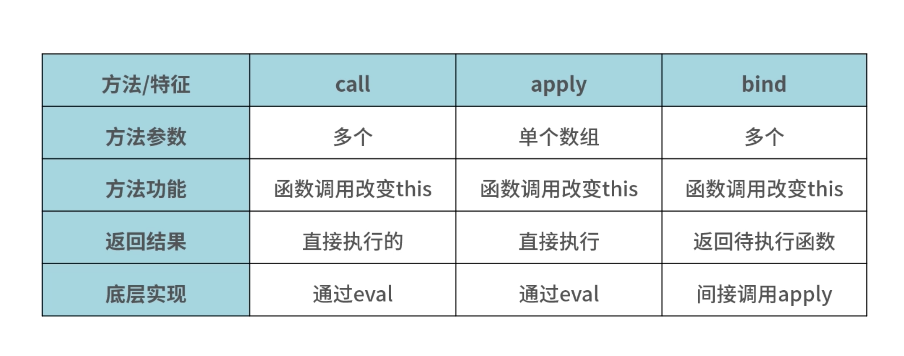

JS继承进阶、深入了解new、apply、call、bind实现逻辑。
问题1：
用什么样的思路可以实现 new 关键词？问题2：
apply、call、bind 这三个方法之间有什么区别？问题3：
怎样实现一个 apply 或者 call 的方法？new 原理介绍
new 关键词的作用
- 就是执行一个构造函数，返回一个实例对象
- 根据构造函数的情况，来确定是否可以接收参数的传递
function Person() {
this.name = 'Jack';
}
var p = new Person();
console.log(p.name) // Jack
new在这个生成实例的过程中，经历了哪些步骤：
- 创建一个新对象
- 将构造函数的作用域赋给新对象（this 指向新对象）
- 执行构造函数中的代码（为这个新对象添加属性）
- 返回新对象
function Person() {
this.name = 'Jack'; // js在默认情况下，new执行之后，this的指向是window，那么name就是Jack
}
var p = Person();
console.log(p) // undefined
console.log(name) // Jack，这是一种不存在new关键词的情况
console.log(p.name) // 'name' of undefined
function Person() {
this.name = 'Jack';
return { age: 18 } // 必须是一个对象，如果不是对象，那么构造函数还是会在new的时候按照步骤返回新生成的对象
}
var p = new Person();
console.log(p) // {age: 18}
console.log(name) // undefined
console.log(p.age) // 18
function Person() {
this.name = 'Jack';
return 'tom';
}
var p = new Person();
console.log(p) // {name: 'Jack'}
console.log(p.name) // Jack
new关键词执行之后总是会返回一个对象，要么是实例对象，要么是return语句指定的对象
apply & call & bind原理介绍
call、 apply 和 bind 是挂在Function对象上的三个方法
调用这三个方法的必须是一个函数
func.call(thisArg, param1, param2, ...) // thisArg一般为this所指的对象
func.apply(thisArg, [param1, param2, ...])
func.bind(thisArg, param1, param2, ...)
改变函数 func 的 this 指向
call、 apply的参数不同，改变this指向后立马执行 bind虽然改变了function的this指向，但不是马上执行
生活中我不经常做饭，家里没有锅，周末突然想给自己做个饭尝尝。
但是家里没有锅，而我又不想出去买，所以就问隔壁邻居借了一个锅来用，
这样做了饭，又节省了开销，一举两得
A对象有个 getName 的方法，B 对象也需要临时使用同样的方法那么这时候可以借用A对象的 getName 方法
let a = {
name: 'jack',
getName: function(msg) {
return msg + this.name;
}
}
let b = {
name: 'lily',
}
console.log(a.getName('hello~')); // hello~jack
console.log(a.getName.call(b, 'hi~')); // hi~lily
console.log(a.getName.apply(b, ['hi~'])); // hi~lily
let name = a.getName.bind(b, 'hello~');
console.log(name()); // hello~lily
方法的应用场景
下面几种应用场景的理念都是“借用”方法的思路
判断数据类型
用 Object.prototype.toString 几乎可以判断所有类型的数据
function getType(obj) {
let type = typeof obj;
if (type !== 'object') {
return type;
}
return Object.prototype.toString.call(obj).replace(/^\[object (\S+)\]$/, '$1');
}
类数组借用方法
类数组因为不是真正的数组，所以没有数组类型上自带的种种方法，可以利用一些方法去借用数组的方法
var arrayLike = {
0: 'java',
1: 'script',
length: 2
}
Array.prototype.push.call(arrayLike, 'jack', 'lily');
console.log(typeof arrayLike); // 'object'
console.log(arrayLike);
// { 0: 'java', 1: 'script', 2: 'jack', 3: 'lily', length: 4 }
获取数组的最大 / 最小值
用 apply 来实现数组中判断最大 / 最小值, apply直接传递数组作为调用方法的参数，也可以减少一步展开数组
let arr = [13, 6, 10, 11, 16];
const max = Math.max.apply(Math, arr);
const min = Math.min.apply(Math, arr);
console.log(max); // 16
console.log(min); // 6
继承
function Parent3() {
this.name = 'parent3';
this.play = [1, 2, 3];
}
Parent3.prototype.getName = function (){
return this.name;
}
function Child3() {
// 第二次调用Paernt3()
Parent3.call(this);
this.type = 'child3';
}
// 第一次调用Parent3()
Child3.protptype = new Parent3();
// 手动挂上构造器，指向自己的构造函数
Child3.protptype.constructor = Child3;
var s3 = new Child3();
var s4 = new Child3();
s3.play.push(4);
console.log(s3.play, s4.play); // 不互相影响
console.log(s3.getName()); // 正常输出'parent3'
console.log(s4.getName()); // 正常输出'parent3'
如何自己实现这些方法
new 的实现
new 被调用后大致做了哪几件事情
- 让实例可以访问到私有属性
- 让实例可以访问构造函数原型（constructor.prototype）所在原型链上的属性
- 构造函数返回的最后结果是引用数据类型
function _new(ctor, ...args) {
if (typeof ctor !== 'function') {
throw 'ctor must be a function';
}
let obj = new Object();
obj.__proto__ = Object.create(ctor.prototype);
let res = ctor.apply(obj, ...args);
const isObject = typeof res === 'object' && typeof res !== null;
const isFunction = typeof res === 'function';
return isObject || isFunction ? res : obj;
};
apply 和 call 的实现
结合方法“借用”的原理
Function.prototype.call = function (context, ...args) {
var context = context || window;
context.fn = this;
var result = eval('context.fn(...args)');
delete context.fn;
return result;
}
Function.prototype.apply = function (context, ...args) {
var context = context || window;
context.fn = this;
var result = eval('context.fn(...args)');
delete context.fn;
return result;
}
这两个方法是直接返回执行结果，而bind方法是返回一个函数，因此这里直接用eval执行得到结果
bind 的实现
bind 的实现思路基本和 apply 一样
但是在最后实现返回结果这里
bind 不需要直接执行，因此不再需要用 eval 而是需要通过返回一个函数的方式将结果返回
之后再通过执行这个结果，得到想要的执行效果
Function.prototype.bind = function (context, ...args) {
if (typeof this !== 'function') {
throw new Erroe('this must be a function');
}
var self = this;
var fbound = function () {
self.apply(this instanceof self ? this : context,
args.concat(Array.prototype.slice.call(arguments)));
}
if (this.prototype) {
fbound.prototype = Object.create(this.prototype);
}
return fbound;
}
总结
